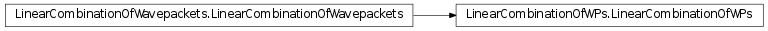
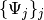

LinearCombinationOfWPs¶
About the LinearCombinationOfWPs class¶
The WaveBlocks Project
@author: R. Bourquin @copyright: Copyright (C) 2010, 2011, 2012, 2013, 2014 R. Bourquin @license: Modified BSD License
Inheritance diagram¶

Class documentation¶
- class WaveBlocksND.LinearCombinationOfWPs(dimension, number_components, number_packets=0)¶
This class represents linear combinations of general but compatible wavepackets of any kind.
- __init__(dimension, number_components, number_packets=0)¶
Initialize a new linear combination of general wavepackets. This object represents
 .
All
.
All  wavepackets
wavepackets  have the same number
have the same number  components and are defined in the
components and are defined in the  dimensional space.
dimensional space.Parameters: - dimension – The space dimension the packets have.
- ncomponents – The number of components the packets have.
Returns: An instance of LinearCombinationOfWPs.
- dimension – The space dimension
- __str__()¶
Returns: A string describing the linear combination of general wavepackets
 .
.
- add_wavepacket(packet, coefficient=1.0)¶
Add a new wavepacket to the linear combination.
Parameters: - packet (A Wavepacket subclass instance.) – The new wavepacket to add.
- coefficient – The corresponding coefficient
 , default is 1.0.
, default is 1.0.
- packet (A Wavepacket subclass instance.) – The new wavepacket
- add_wavepackets(packetlist, coefficients=None)¶
Add a list of new wavepackets to the linear combination.
Parameters: - packetlist (A list of Wavepacket subclass instances.) – A list of new wavepackets
 .
. - coefficients – The corresponding coefficient vector
 , default
is a vector of all 1.0.
, default
is a vector of all 1.0.
- packetlist (A list of Wavepacket subclass instances.) – A list of new wavepackets
- evaluate_at(grid, component=None)¶
Evaluate the linear combination of wavepackets
 at
the given nodes
at
the given nodes  .
.Parameters: - grid (A class having a get_nodes method.) – The grid
 containing the nodes .
containing the nodes . - component – The index
 of a single component to evaluate.
(Defaults to None for evaluating all components.)
of a single component to evaluate.
(Defaults to None for evaluating all components.)
Returns: A list of arrays or a single array containing the values of the
 at the nodes .
at the nodes .- grid (A class having a get_nodes method.) – The grid
- get_coefficient(index)¶
Get the coefficient
of the wavepacket .Parameters: index – The index  of the coefficient to retrieve.
of the coefficient to retrieve.Returns: The coefficient .
- get_coefficients()¶
Get the vector with all coefficients
of all wavepackets .Returns: The vector of all coefficients . The vector is of
shape  .
.Type : An ndarray
- get_description()¶
Return a description of this linear combination object. A description is a dict containing all key-value pairs necessary to reconstruct the current instance. A description never contains any data.
- get_dimension()¶
Returns: The space dimension of all the wavepackets .
- get_number_components()¶
Returns: The number of components all the wavepackets have.
- get_number_packets()¶
Returns: The number of wavepackets in the linear combination .
- get_wavepacket(index)¶
Get the wavepacket
from the linear combination.Parameters: index – The index of the packet to retrieve.Returns: The wavepacket .Type : A Wavepacket subclass instance.
- get_wavepackets()¶
Get a list of all wavepackets
in the linear combination.Returns: A list of all wavepackets .Type : A list of Wavepacket subclass instances.
- remove_wavepacket(index)¶
Remove a wavepacket
from the linear combination.Parameters: index – The index of the packet to remove.
- set_coefficient(index, coefficient)¶
Set the coefficient
of the wavepacket .Parameters: - index – The index of the coefficient to retrieve.
- coefficient – The coefficient .
- index – The index
- set_coefficients(coefficients)¶
Update all the coefficients
of .Parameters: coefficients (An ndarray) – The vector .
- set_wavepackets(packetlist)¶
Set the list  of new wavepackets.
Parameters: packetlist (A list of Wavepacket subclass instances.) – A list of new wavepackets .